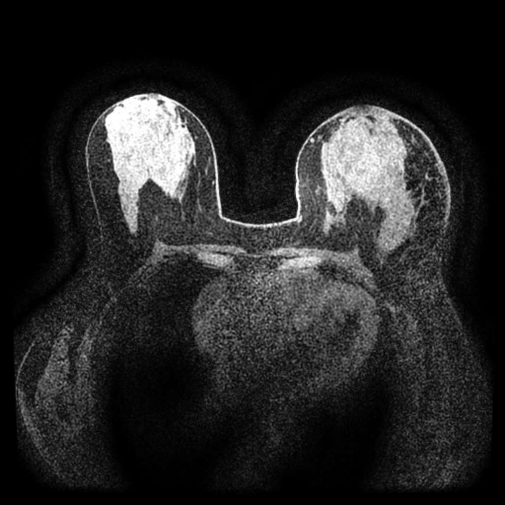
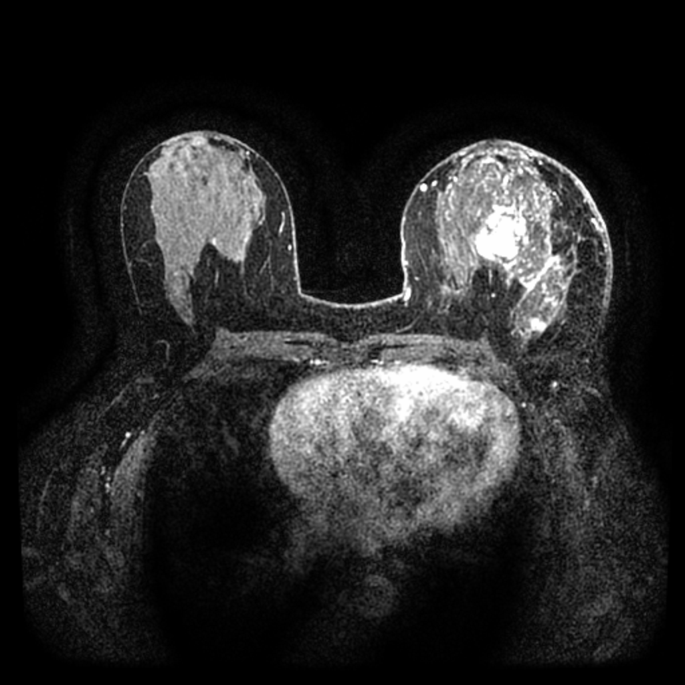
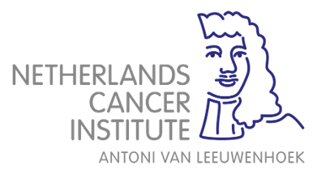

Smriti Joshi
Universitat de Barcelona, Spain
Challenge Co-LeadDynamic contrast-enhanced MRI (DCE-MRI) plays a central role in breast cancer management, but its reliance on gadolinium-based contrast agents raises various concerns. MAMA-SYNTH introduces a standardized, clinically informed benchmark for evaluating generative models, with the goal of advancing the development of contrast-reduced and contrast-free breast MRI protocols.
Why?Swipe to take a deeper dive.
The task of the challenge is to synthesize 2D post-contrast breast DCE-MRI from corresponding pre-contrast DCE-MRI input. Participating algorithms operate on pre-contrast images where the malignant tumor is the largest and generate corresponding synthetic peak-enhanced post-contrast output.

Pre-contrast

Peak-enhancement
The challenge utilizes diverse datasets to ensure algorithmic generalizability across different scanners and populations.
This dataset contains pre-treatment DCE-MRI from 1,506 patients from 25 + centers across the United States. Access the complete dataset on Synapse. Key properties are shown below:
We note that participants are allowed to train their models on any further dataset, as long as said dataset is publicly available. To ensure fair evaluation across participating teams, the usage of private data is not allowed in this challenge. We further note that by participating in this challenge, participants agree to comply with EO 14117, 28 CFR Part 202, and Guide Notice NOT-OD-25-083 and acknowledge that the usage of NIH Controlled-access Data Repositories (CADRs) is prohibited in this challenge.
The test data were acquired from two external centers located in the Netherlands and Argentina. Each test case refers to a 2D slice extracted from a patient’s DCE scan.
For each patient, the slice containing the largest malignant tumor area is selected from the peak enhancement phase.
The peak-enhancement phase is defined as the time point with the highest signal intensity within the tumor region. Note that this conversion to two-dimensional slice requires normalization. The challenge opts for z-score normalization computed with the training dataset pre-contrast mean and standard deviation. The preprocessing scripts can be found on the MAMA-SYNTH repository.
All test images are fat-suppressed and acquired in the axial plane. The main statistics are summarized below:
| Field | Radboud UMC The Netherlands |
Instituto Alexander Fleming Argentina |
|---|---|---|
| Number of Cases | 177 | 94 |
| Image Dimension | 416 × 416 px | 512 × 512 px |
| Contrast Agent | DOTAREM (99%), GADOVIST (0.5%) | DOTAREM, GADOVIST |
| Manufacturer | Siemens | GE |
| Magnetic Field Strength | 3T | 1.5T |
| Molecular Subtype | ||
| ↳ Luminal | 165 (85.7 %) | 37 (37 %) |
| ↳ Triple Negative | 23 (9.4 %) | 30 (30 %) |
| ↳ Other | 12 (4.9 %) | 20 (20 %) |
Submissions are evaluated across four metric groups spanning pixel-level fidelity, perceptual realism, diagnostic classification performance, and segmentation accuracy. Start evaluating your models locally following the instructions on the MAMA-SYNTH repository.
MSE measures the average squared difference between each pixel in the synthesized output and its corresponding pixel in the ground-truth post-contrast image. Lower values indicate greater pixel-level fidelity.
LPIPS computes perceptual distance between images using deep network feature activations, capturing texture and structural similarity closer to human perception than pixel-wise metrics. Lower values indicate more realistic synthesis.
SSIM evaluates image quality by jointly measuring luminance, contrast, and structural similarity within local patches. Applied to the tumor ROI, it captures how well the synthesized enhancement texture matches the reference. Values range from 0–1; higher is better.
FRD adapts the FID framework to radiomic feature space, measuring the Fréchet distance between the feature distributions of the synthesized ROI patches and real post-contrast patches. Lower values indicate that the synthesized tumors are more statistically indistinguishable from real enhancement patterns.
Measures the classifier's ability to distinguish between pre and post-contrast on synthesized images. A score of 1.0 indicates perfect separation; 0.5 is random.
Measures the classifier's ability to distinguish between tumor and non-tumor tissue on synthesized images. A score of 1.0 indicates perfect separation; 0.5 is random.
The Dice coefficient measures voxel-level overlap between the predicted segmentation mask on synthesized post-contrast and the ground-truth mask. It is the harmonic mean of precision and recall over the segmented region. Values range from 0–1; higher values indicate better spatial overlap.
The 95th-percentile Hausdorff Distance (HD95) measures the worst-case boundary deviation between the predicted segmentation mask on synthesized post-contrast and reference segmentation contours, excluding the top 5% of outlier distances for robustness. Lower values indicate more precise boundary delineation.
| May 8 | Validation Phase Opens | |
| June 25 | Test Phase Opens | |
| July 10 | Last Submission Deadline | |
| July 15 | Paper Submission Deadline (OpenReview) | |
| July 31 | Paper Review Results Out | |
| August 2 | Official Results Release | |
| August 16 | Camera Ready Deadline (View Checklist) | |
| September 27 | Winners Announcement at Deep-Breath Workshop (MICCAI 2026) | |
The top placements are being kept confidential until the official announcement at MICCAI 2026 @ Strasbourg, France. Two candidates share the second position. Congratulations on all your work!
| Rank | Team Name | Paper |
|---|
Universitat de Barcelona, Spain
Challenge Co-LeadUniversitat de Barcelona, Spain
Challenge Co-LeadRadboud University Medical Centre, Netherlands
Challenge Co-LeadRadboud University Medical Centre, Netherlands
Universitat de Barcelona, Spain
Instituto Alexander Fleming, Argentina
Radboud University Medical Centre, Netherlands
Universitat de Barcelona, Spain
Universitat de Barcelona & CVC, Spain
Radboud University Medical Centre, Netherlands

Radboud University Medical Centre, Netherlands
Radboud University Medical Centre, Netherlands
Instituto Alexander Fleming, Argentina
Universitat de Barcelona & CVC, Spain
Universitat de Barcelona & ICREA, Spain
For Q&A regarding challenge, please directly refer to Grand Challenge Forum. For additional inquiries about the MAMA-SYNTH challenge and future collaborations, feel free to reach out to Smriti Joshi (smriti.joshi[at]ub.edu) and Richard Osuala (richard.osuala[at]gmail.com). .
